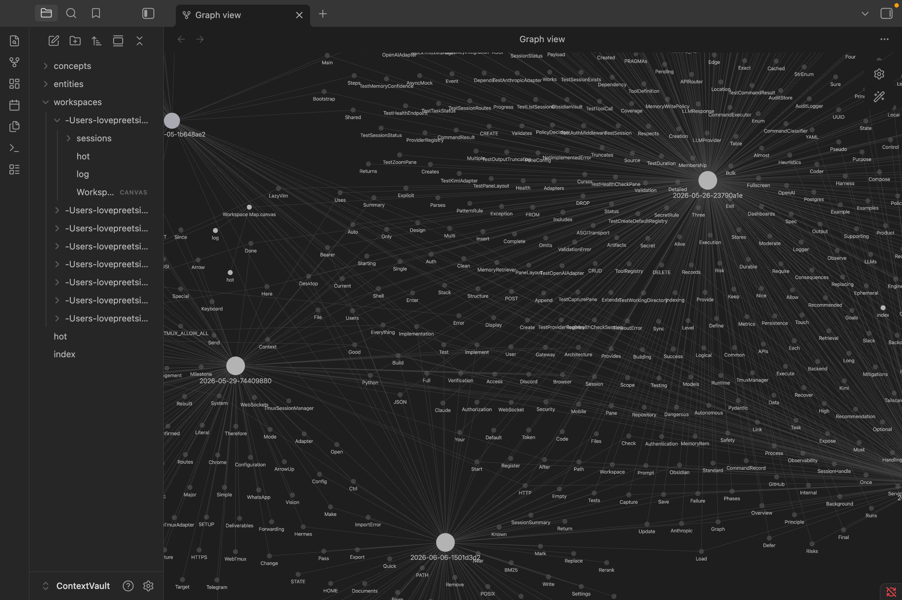

Auto-capture your coding sessions into an Obsidian knowledge graph. The next session starts with full context already loaded.
$ pip install contextvault
// features
One capture pipeline. One MCP server. Context that follows you between Claude Code, Hermes, Cursor, and anything that speaks MCP.
Every turn end extracts goals, decisions, files touched, commands, errors, and TODOs into a structured Markdown note.
Wikilinks connect sessions to shared entities and concepts. Browse the graph in Obsidian.
Deterministic, offline extraction. Secrets are regex-redacted before they reach disk.
BM25 search with optional cosine reranking via ollama embeddings. Your LLM asks, the vault answers.
Memory is scoped to your working directory. Cross-workspace queries are opt-in. No leakage between projects.
10 lint checks catch orphan pages, dead links, stale claims, semantic drift, and more.
// architecture
Plain Markdown all the way down. No lock-in, no database.
When a Claude Code turn ends or a Hermes hook fires, the pipeline reads the transcript, extracts structured facts, redacts secrets, and writes a Markdown note.
A persistent BM25 index updates incrementally. If ollama is installed, cosine-similarity reranking sharpens results further.
The MCP server exposes recall, recent_sessions, save_note, and more. Your LLM calls these tools to ground responses in past sessions.
// obsidian
Open the vault in Obsidian and press Cmd+G. Wikilinks form a knowledge graph you can explore visually.

// Graph view in Obsidian — nodes are sessions, entities, and concepts
// setup
Clone, init, connect. You're capturing.
# Install
git clone git@github.com:singhdevhub-lovepreet/contextvault.git
cd contextvault && python3 -m venv .venv
.venv/bin/pip install -e ".[dev]"
# Put on PATH
ln -sf "$(pwd)/.venv/bin/contextvault" ~/.local/bin/contextvault
# Initialise the vault
contextvault initOne command installs hooks + MCP server into Claude Code:
contextvault adapter add claude-codeStop hook — captures incrementally after every turn.
SessionStart hook — loads the workspace hot cache.
MCP server — registers recall, save_note, and 4 more tools.
Restart Claude Code. Every session is now captured automatically.
Hermes connects via native MCP:
hermes mcp add contextvault --command contextvault --args serve
# Enable all 6 tools when prompted
hermes mcp test contextvault # verify connectionFor auto-capture on every turn, install the shell hooks.
Same MCP server, different config path:
contextvault adapter add cursor
# paste the snippet into ~/.cursor/mcp.jsonRestart Cursor. The contextvault server appears under Settings → MCP Tools.
// cli
contextvault init
Scaffold vault, write config, generate token
contextvault serve
Run MCP and/or HTTP server
contextvault capture --cwd .
Capture a session transcript
contextvault recall "query"
Search the vault, return top-K hits
contextvault lint
Run 10 health checks on the vault
contextvault hot
Print the workspace hot cache
contextvault workspaces ls
List all known workspaces
contextvault export --workspace=WS
Zip a workspace for sharing
contextvault adapter add ...
Install a client adapter
contextvault ingest FILE
Import a file into the vault
contextvault save --title T
Pipe stdin into a vault note
contextvault sweep
Capture orphan sessions